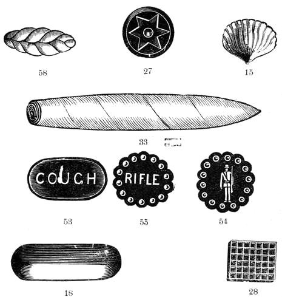

Pear Drops

Ingredients
- 14 lbs. White Sugar.
- 3 lbs Glucose.
- 1/4 oz. Essence of Pear.
- 1 oz. Tartaric Acid.
- 2 quarts water.
- Paste, Red Color.
Steps
- Dissolve the sugar in the water, add the glucose, and bring the whole to the degree of crack.
- Pour the contents on the slab, rub in a little red paste color in one corner of the boil to color light pink, turn up the edges.
- Add the powdered acid in a little heap, pour over the acid the pear essence and thoroughly mix through the entire mass by kneading.
- When the batch is stiff enough cut off in small pieces and pass through the pear drop rollers.
- When cold sift and mix some icing sugar amongst them, and bottle.